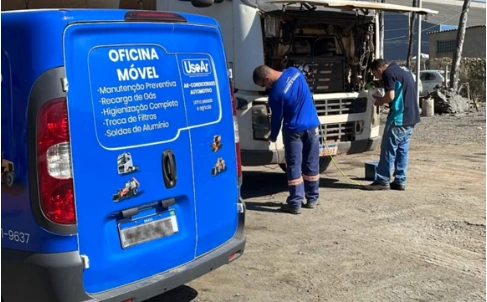

01
Manutenção e diagnóstico
- Manutenção preventiva e corretiva do ar-condicionado
- Diagnóstico de vazamentos e falhas elétricas
- Instalação de kits de ar-condicionado originais
- Teste completo de eficiência do sistema